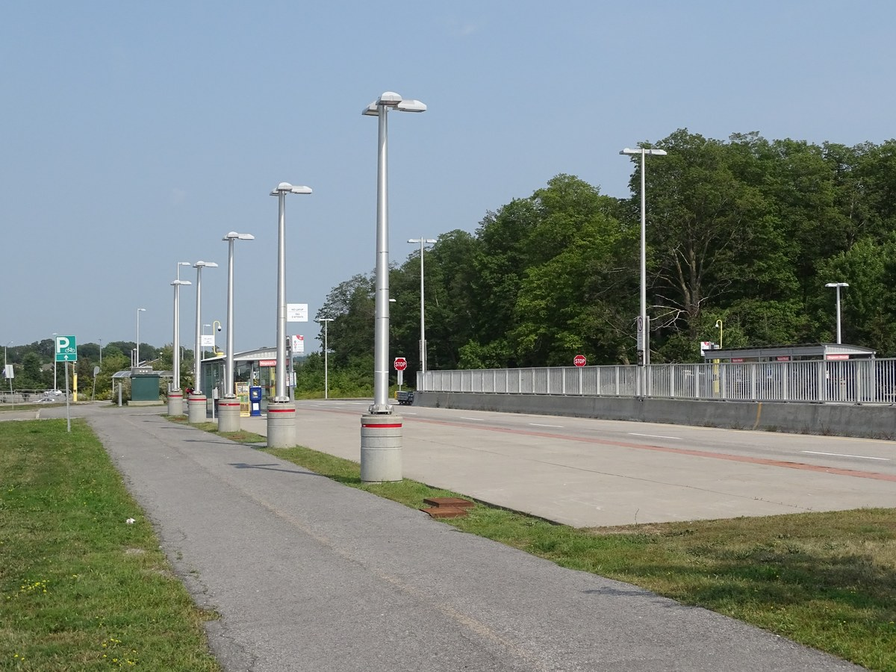
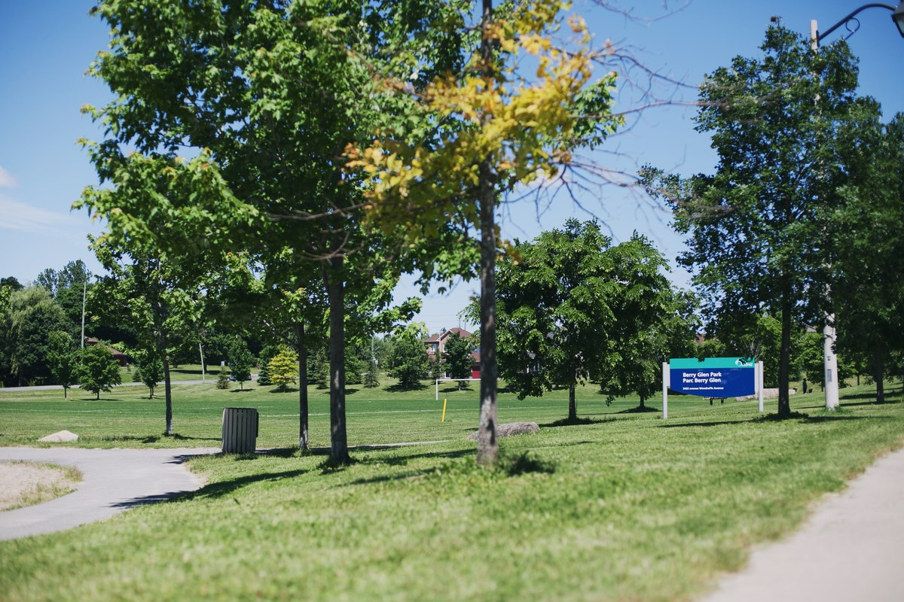
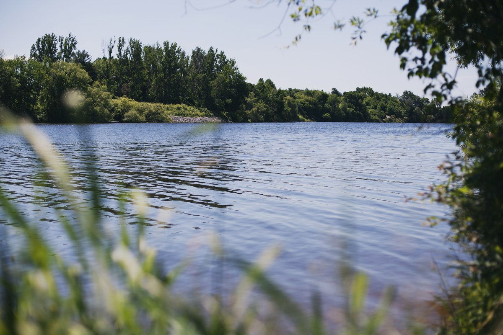

Beatrice Station, on Chapman Mills Drive at Beatrice Drive. Photo: Mosbo6, CC BY-SA 4.0, via Wikimedia Commons.
Your complete guide to houses for sale in Barrhaven East (7710), a Barrhaven neighbourhood in Ottawa — real estate advice for buying and selling in the Barrhaven East neighbourhood, with live listings and prices updated daily.
This guide to the Barrhaven East (7710) neighbourhood starts with the real numbers — the schools, parks and price bands that matter — because streets here trade on river frontage, the four-board school grid, and how the Chapman Mills streets sit between Woodroffe and Prince of Wales.
Barrhaven East is Barrhaven's river-edge family pocket (AMP area 7710 — Barrhaven — Barrhaven East) — centred on Chapman Mills Drive and the Davidson Heights crescents and built around two planned pockets between Woodroffe Avenue and Prince of Wales Drive, running east to the Rideau River. It takes in Chapman Mills and Davidson Heights — built mainly by Minto from the late 1990s through the 2010s, with Urbandale and Richcraft pockets — and it holds the widest spread of freehold homes in Barrhaven, from entry rows and semis to river-front estates: three decades of family stock. Its signature river is the Rideau River, along its eastern edge, and the Jock River crosses its southern streets on the way to meet it. And the river itself is the eastern boundary — the streets that front it are the neighbourhood's top tier.
If you are browsing Ottawa houses for sale and want a public elementary school in every board inside the community, two rivers at your edges and everything from an entry row to a river estate in one pocket, this Barrhaven East neighbourhood guide covers the schools, the parks, the river access and the price context that matter. If you want Barrhaven's established river pocket, where a deep family mid-range sits beneath a thin tier of Rideau River estates — start with the Barrhaven East Neighbourhood.
Live market snapshot for Barrhaven East — active listings, average, median, lowest and highest asking prices, refreshed daily. Figures below update every morning.
Live Market Snapshot — Barrhaven East
Market update: this snapshot reflects the live MLS® feed and is refreshed every morning.
Market read: Barrhaven East's river frontage and four-board school coverage keep family demand constant — the live snapshot above carries today's count, average and median. The 12-month average-trend chart above will track direction as history builds — check back monthly.
Average days on market. For context, Barrhaven as a whole averages about a month on market; this area's average DOM is computed from the live feed's days-on-market field across the current active listings.
Market read: Barrhaven East's asking prices span the widest range in Barrhaven — a family mid-range anchored by Davidson Heights and Chapman Mills, and a river-estate tier on Winding Way and Tradewinds Drive. The 12-month trend tracker above builds that history month by month; every figure here is asking price, not sold price.

Nepean Woods Station, the Transitway Park & Ride at Woodroffe Avenue and Strandherd Drive. Photo: Mosbo6, CC BY-SA 4.0, via Wikimedia Commons.
Exploring Barrhaven East & Its Communities
Barrhaven East is everything in Barrhaven between Woodroffe Avenue and the Rideau River — Barrhaven's easternmost pocket. Chapman Mills Drive is the spine: it runs from the Woodroffe side east to Prince of Wales Drive, and the two pockets divide around it. Strandherd Drive closes the south-west approach, and the Jock River crosses the southern streets on its way to the Rideau. The river is not a backdrop here — it is the eastern boundary, and the streets that front it carry the neighbourhood's top tier.
The named sections: Chapman Mills (the western pocket around Chapman Mills Drive and Leamington Way, built from the late 1990s) and Davidson Heights (the eastern pocket toward the river, around Stoneway Drive and the Clarington Avenue crescents). Around them sit the river streets — Winding Way and Tradewinds Drive — and the low-rise condo apartments of Stonefield Flats near the shore.
The street pattern is established-subdivision: crescents and courts off the two spines, mature trees filling in behind the 1990s and 2000s rooftops, and lots that grow as the streets run east toward the water. The land was farmland and river lots within living memory: the subdivisions arrived in the late 1990s and built out through the 2010s, and today the pocket is fully established — what changes hands here is resale.
Housing Stock & Price Context
An established family pocket centred on Chapman Mills Drive and the Davidson Heights crescents: Minto rows, semis and detached singles in Chapman Mills (Leamington Way, Penfield Drive), detached and bungalow stock in Davidson Heights (Stoneway Drive, Clarington Avenue, Crestway Drive) — including the Helmsley bungalow streets around Oldfield Street — and the river-estate tier on Winding Way and Tradewinds Drive. Named builders: Minto, with Urbandale and Richcraft pockets. Price context on this page is shown only as asking-price bands from the live freehold set — the live snapshot above and the bands below carry the numbers. Pricing moves with the market — ask me for current comparable sales before you write an offer.
Barrhaven East Neighbourhood price bands — what the money buys (current asking prices for houses for sale)
Bands below are built from real figures in the live MLS® feed — no invented listings, no padded bands. As the Ottawa REALTOR® buyers trust for straight numbers, I describe only what the live feed actually shows.
Under $650,000: the Barrhaven East Neighbourhood's entry shelf — Minto's wide-and-shallow row homes and entry semi-detached homes on the Davidson Heights crescents and the original Chapman Mills streets. This is the first rung of the pocket's ladder: 1990s–2000s layouts, many with updates, at the east side's entry prices.
$650,000–$750,000: the move-up step — larger semis and the first detached singles across both pockets: wider plans, double garages on the detached streets, and the family layouts buyers cross-shop against Longfields and Hearts Desire resale.
$750,000–$1,500,000: the main detached shelf — two-storey singles on the mature Davidson Heights streets and the Chapman Mills avenues, up through the premium river-side streets. Most of the pocket's family demand lives in this band.
Over $1,500,000: the river-estate tier — large custom homes on Winding Way and Tradewinds Drive fronting the Rideau River itself: deep lots, treed banks and some of the deepest river frontage in Barrhaven freehold.
| Home type | Typical asking range | What it buys |
|---|---|---|
| Townhouse | Under $650K | Minto wide-and-shallow towns and traditional rows — Chapman Mills and Davidson Heights |
| Semi-detached | Under $650K entry; main shelf $650K–$750K | Two-storey semis on the Davidson Heights crescents and the Chapman Mills streets |
| Detached | $650K–$750K entry; main shelf $750K–$1.5M; river estates over $1.5M | Two-storey singles and bungalows across both pockets — the Winding Way and Tradewinds Drive river estates at the top |
Most buyer demand in Barrhaven East clusters around 3 and 4 bedroom homes for sale in Barrhaven East — a public elementary school in every board inside the community, two rivers at its edges and Barrhaven's widest freehold spread keep the buyer pool deep in every band.
Schools & Catchments
The school grid is this community's signature strength: Barrhaven East has a public elementary school in all four boards inside its own boundaries — a bench no other Barrhaven sub-area matches. The splits here run by pocket rather than by street lottery: Chapman Mills feeds one set of schools, Davidson Heights another — so your exact school still follows your exact address, and you should always confirm on the board locator before you buy.
English public (OCDSB): two elementaries sit inside the community — Chapman Mills Public School (260 Leamington Way, Kindergarten–Grade 6, English and Early French Immersion), serving all of Chapman Mills, and Adrienne Clarkson Elementary School (170 Stoneway Drive, Kindergarten–Grade 6, English and Early French Immersion), serving Davidson Heights and the Winding Way and Havenlea side. From either school, students feed Longfields-Davidson Heights Secondary School (149 Berrigan Drive, Grades 7–12, English and French Immersion), just outside the boundary in Longfields.
English Catholic (OCSB): three elementaries inside the community, split by pocket — St. Emily School (500 Chapman Mills Drive, JK–Grade 6) serves Chapman Mills; St. Andrew School (201 Crestway Drive, JK–Grade 6) and Monsignor Paul Baxter School (333 Beatrice Drive, JK–Grade 6) serve Davidson Heights. St. Emily and St. Andrew feed St. Joseph High School (Grades 7–12) and Monsignor Paul Baxter feeds St. Mother Teresa High School (Grades 7–12), both just outside the boundary.
French Catholic (CECCE): École élémentaire catholique Jean-Robert-Gauthier (380 Penfield Drive, Kindergarten–Grade 6) sits inside the community — it opened in 1999 as the first French-language school in Barrhaven. At secondary, Chapman Mills feeds École secondaire catholique Pierre-Savard (1110 Longfields Drive, Grades 7–12), just outside the boundary, while Davidson Heights is assigned to Collège catholique Franco-Ouest in the city’s west end — the one long ride in the grid, so confirm the current assignment with the board.
French public (CEPEO): École élémentaire publique Michaëlle-Jean (11 Clarington Avenue, Kindergarten–Grade 6) sits inside Davidson Heights. The assigned secondary for all of Barrhaven East is École secondaire publique Pierre-de-Blois (1310 Chapman Mills Drive, Grades 7–12), just outside the boundary on the Chapman Mills corridor — one of the closest secondaries to the community in any board.
Parks, Trails & Recreation
The anchor is the river itself: the Rideau River runs the full eastern edge — treed banks, open water and the shoreline access at the pocket's south end. Inside the streets, the park bench is neighbourhood-scale: playgrounds, splash pads and courts woven into both pockets, with the Jock River closing the south.
Berry Glen Park is the Davidson Heights neighbourhood park — playground, splash pad, basketball court and an open green, signed in both official languages and busy from the first warm weekend. The Chapman Mills side answers with pocket parks along its crescents, and both pockets plug into the path network that runs the rivers.

Berry Glen Park, in Davidson Heights. Photo: ScottBuckingham, CC BY-SA 4.0, via Wikimedia Commons.
At the south end, Jock River Landing — where the Jock River meets the Rideau at Prince of Wales Drive — is the neighbourhood's launch point: canoe and kayak launch, dock and fishing spots where the two rivers join. It is the working end of the river story: the estates front the water, and this is where everyone else gets on it.
Commute, Transit & the Barrhaven Downtown Future
Today's transit runs on the bus network. Route 70 (Frequent) runs 15-minute service along Chapman Mills Drive toward Barrhaven Town Centre and Fallowfield Station, with local routes threading the pockets and the Fallowfield and Strandherd Park & Ride lots minutes away. No LRT station sits in Barrhaven East today — honest commute planning here starts from the Frequent bus spine and the two road spines below.
The long-term story is Barrhaven Downtown: the City's planned civic core on the Chapman Mills Drive lands at Riocan Avenue — a future civic complex, a park, and the planned Barrhaven Town Centre station on the O-Train Line 2 extension (Stage 3 LRT). It is a future phase beyond the current build-out: planned, with no date promised, and this guide promises none — but the lands are reserved, and they sit at this pocket's western door.
Road access is the quiet advantage: the pocket sits between Woodroffe Avenue and Prince of Wales Drive, and Prince of Wales runs straight downtown along the river — one of Ottawa's most scenic commutes. To the south, the Vimy Memorial Bridge carries Strandherd Drive across the Rideau to Riverside South. Ask me about the fastest routes from a specific street.

The Rideau River, along the eastern edge of Barrhaven East. Photo: ScottBuckingham, CC BY-SA 4.0, via Wikimedia Commons.
Shopping, Groceries & Restaurants
There is no big-box plaza inside Barrhaven East — and residents treat that as a feature. Daily retail clusters at the edges: the Chapman Mills corridor west toward Strandherd, and the full Barrhaven retail spine a few minutes away — Chapman Mills Marketplace (Loblaws, Walmart Supercentre, Cineplex, Winners), Barrhaven Town Centre (Your Independent Grocer, Dollarama, Home Depot, Shoppers Drug Mart) and Strandherd Crossing (Metro, GoodLife Fitness). Inside the pockets, it is neighbourhood-scale plazas and services along Chapman Mills Drive: groceries, pharmacies and takeout at the scale the streets were built for. The full Barrhaven directory lives on the parent Barrhaven page.
New construction homes in Barrhaven East
Who's building where — Barrhaven East Neighbourhood
| Community | Builder | Product | Status |
|---|---|---|---|
| Chapman Mills & Davidson Heights — the original pockets, built from the late 1990s through the 2010s | Minto (original builder) | Rows, semis and detached homes | Built out — resale only |
| Barrhaven Downtown lands — Chapman Mills Drive at Riocan Avenue | City of Ottawa | Future civic complex, park and rapid-transit station | In planning — no homes selling |
Just west of the boundary: the Chapman Mills corridor's one current new-home story is 900 Chapman Mills Drive, where Mattamy's townhome community has its site plan approved at the corridor's west gateway. That pocket sits in the Strandherd sub-area, so it is covered in full in the Strandherd neighbourhood guide — cross-shop its new towns against Barrhaven East resale with both guides open.
Builder prices, discounts, rebates, layouts, available lots and upcoming releases change constantly — call or text 613-314-1199 and I will send you the current Barrhaven East Neighbourhood new-builder package.
This Barrhaven East neighbourhood guide carries live Barrhaven East listings — Barrhaven East houses for sale and Barrhaven East homes for sale — with map search, new-listing alerts, and saved searches. View all Barrhaven East listings on a live map. If you want new Barrhaven East listings the moment they hit the market, call or text me and I will set up a private search for you. Searching for a 'Barrhaven East neighborhood guide' — or just 'Barrhaven East neighborhood' — with the American spelling? Same place — 'neighbourhood' is the Canadian spelling.
Open houses this weekend in Barrhaven East Neighbourhood: the live map above flags every scheduled open house in the feed. Want the full weekend list plus private showings? Call or text 613-314-1199.
Comparing nearby Barrhaven pockets: buyers cross-shopping Barrhaven East usually compare Strandherd (west along the Chapman Mills corridor, with the retail spine and its own Transitway station), Longfields (north-west, home of the secondary school half this pocket feeds) and Half Moon Bay (south across the Jock River — the new-build pocket, for buyers weighing resale against new construction).
Explore all 11 Barrhaven neighbourhoods
This Barrhaven East neighbourhood guide is one of eleven Barrhaven neighbourhood guides on this site. Start with the Barrhaven Houses for Sale | Homes in Barrhaven Ottawa for the full Barrhaven overview, live listings map and market snapshot, then explore each sub-area: Pheasant Run, Knollsbrook, Cedargrove and Fraserdale, Heritage Park, On the Green, Longfields, Hearts Desire, Stonebridge, Strandherd, Barrhaven East, Half Moon Bay.
The honest pros and cons of Barrhaven East Neighbourhood
Best parts: a public elementary school in every board inside the boundary; Rideau River frontage with the Jock River at the south end; Jock River Landing for getting on the water; and the widest price spread in Barrhaven — a real entry tier and a real estate tier in one pocket. Be aware of: no retail plaza inside the boundary (daily shopping rides to the Strandherd spine); the secondary schools sit just outside it; river and floodplain lots carry the conservation-authority permit check before you build or renovate; and a few older properties may run on private well or septic services — check the records before you offer.
Who should move to Barrhaven East Neighbourhood?
Families — a school in every board's grid, with four-board elementary coverage inside the boundary. River buyers — the Barrhaven pocket where freehold homes front the Rideau itself. Move-up buyers — rows and semis in the mid-range, detached above them and estates at the top, all inside one school grid. First-time buyers — an entry tier of rows and semis that still prices under $650,000, in an established pocket instead of a construction zone.
Frequently Asked Questions
01 — Pricing & Market
What is the average home price in Barrhaven East?
The snapshot near the top of this page shows today's average asking price, median and range for Barrhaven East Neighbourhood, refreshed every morning from the live MLS® feed. The market here runs on two shelves — a deep family mid-range of rows, semis and detached homes, and a thin top tier of Rideau River estates — so read the snapshot's range as well as its middle figure. Remember these are asking prices, not sold prices; ask me for current comparable sales before you offer.
How many homes are for sale in Barrhaven East Neighbourhood right now?
Inventory changes daily — the live snapshot and map on this page always show the current set, counted from the live MLS® feed, and I can set up a private search that alerts you the moment a new Barrhaven East Neighbourhood listing hits the market.
What do homes under $650,000 buy in Barrhaven East Neighbourhood?
Under $650,000 buys the Barrhaven East Neighbourhood's entry tier: Minto's wide-and-shallow row homes (roughly $500,000 to $600,000) and entry semi-detached homes on the Davidson Heights crescents (roughly $575,000 to $650,000) — including the original Chapman Mills rows around Leamington Way. Many are 1990s–2000s layouts with updates.
Is Barrhaven East Neighbourhood in a buyer's or seller's market?
Asking prices alone can't call it — a true buyer's-or-seller's read needs sold-to-list ratios and days on market from the MLS® feed, not just active listings. What I can say: buyers have a healthy selection to choose from in the Barrhaven East Neighbourhood — the live snapshot on this page shows today's count. Text 613-314-1199 and I'll run the current absorption numbers for your price band.
What types of homes are in Barrhaven East?
Three decades of Minto-led building: row homes and semi-detached homes across Chapman Mills and Davidson Heights, two-storey detached singles on the family streets, bungalows in the mix — the Minto Helmsley bungalow at 25 Oldfield Street is the pocket's model-home example — and a thin tier of large river-front estates on Winding Way and Tradewinds Drive, with low-rise condo apartments at Stonefield Flats.
Is Barrhaven East a good place to buy a home?
For buyers who want an established, built-out pocket with a public elementary school in every board inside the boundary, two rivers at its edges and a real entry tier under $650,000 beneath a river-estate top end — yes. Get current comparable sales before offering.
02 — Buying Process
Want the current new-builder package for Barrhaven East?
Builder prices, discounts, rebates, layouts, available lots, community master plans and upcoming releases change constantly — contact me through the contact form on this page, by email, or by text at 613-314-1199 and I will send you the current package for this area.
Are new homes being built in Barrhaven East?
Inside 7710 itself, no — both pockets are built out, and the market here is resale. The corridor's one current new-home story is just west of the boundary at 900 Chapman Mills Drive in the Strandherd sub-area, covered in the Strandherd guide. If new construction is the goal, text 613-314-1199 and I will send you the current builder packages for the Barrhaven pockets still selling.
New build or resale — which is better for a first-time buyer?
It depends on the home and the budget. New homes carry new-home rebates that resale homes don't — the federal first-time home buyers' GST rebate and Ontario's new-housing rebates apply to new construction only. Resale first-time buyers can still claim an Ontario land transfer tax refund of up to $4,000, and first-time buyers can use a 30-year amortization on an insured mortgage either way. Text 613-314-1199 and ask me which fits your budget.
03 — Barrhaven East Neighbourhood
Where is Barrhaven East in Barrhaven?
Barrhaven East (AMP area 7710 — Barrhaven — Barrhaven East) is Barrhaven's river-edge pocket at the east end of the community — Woodroffe Avenue is its west side, Prince of Wales Drive and the Rideau River its east, Strandherd Drive its south-west approach, and the Jock River crosses its southern streets. It takes in Chapman Mills and Davidson Heights, and it is the Barrhaven sub-area whose freehold homes front the Rideau River.
What schools are near Barrhaven East, Ottawa?
Seven elementary schools sit inside the community, at least one in every board: Chapman Mills Public School (260 Leamington Way, OCDSB) and Adrienne Clarkson Elementary School (170 Stoneway Drive, OCDSB), St. Emily (500 Chapman Mills Drive, OCSB), St. Andrew (201 Crestway Drive, OCSB) and Monsignor Paul Baxter (333 Beatrice Drive, OCSB), Jean-Robert-Gauthier (380 Penfield Drive, CECCE) and Michaëlle-Jean (11 Clarington Avenue, CEPEO) — with the secondaries just outside: Longfields-Davidson Heights (OCDSB), St. Joseph and St. Mother Teresa (OCSB), Pierre-Savard (CECCE) and Pierre-de-Blois (CEPEO), all Grades 7–12. Catchments split by pocket, so confirm your exact school in the board finders before buying.
Are there condos in 7710?
Yes. Stonefield Flats, the low-rise condo apartment buildings near the Rideau River in Davidson Heights, are coded to 7710 — Barrhaven — Barrhaven East, and condo townhomes here trade as condos too. They sit outside this page's freehold snapshot and price bands; the condo pages carry them.
Do I need a conservation authority permit to renovate or build near the river in Barrhaven East?
Often, yes. Lots fronting the Rideau River or backing onto the Jock River can fall inside the Rideau Valley Conservation Authority's regulated area, and Section 28 of the Conservation Authorities Act requires an RVCA permit before you build, add on, place fill or alter a shoreline inside it — on top of the City's building permit. The check costs nothing: confirm the lot on the RVCA's regulation mapping before you offer, and if the property sits in the regulated area, make the permit path part of your plan from day one. Text 613-314-1199 and I will walk the specific lot with you.
How do I check a Barrhaven East home's well and septic records?
Most of Barrhaven East runs on full municipal water and sewer — the subdivisions were built that way. Where a home does run on a private well or septic system, ask for the records before you offer: the well record filed with Ontario's water-well registry, the septic system's installation and inspection history, and a water-quality test for the well. I will build those document requests into the offer so nothing surfaces after closing.
04 — Straight Answers
What does Tomasz Witek actually do to earn his commission as my buyer's agent?
On every home you consider, I run comparable-market pricing from live MLS® data, coordinate private showings around your schedule, build the offer strategy, negotiate price and conditions, manage inspections, and quarterback your lawyer and mortgage timelines to closing day. On most Ottawa resales you don't pay me directly — the seller's brokerage compensates the buyer's brokerage. Text 613-314-1199 and I'll walk you through it before you commit to anything.
What happens if the Barrhaven home I buy needs major repairs after closing?
Pre-offer homework is the protection. I push for a professional inspection on every resale, structure conditions that protect your deposit, and flag age-specific risks — a 1990s original hides different surprises than a 2010s build. New builds carry Tarion warranty coverage. If an inspection uncovers major issues, we renegotiate the price or walk away with your deposit intact.
Am I locked in if I sign a buyer representation agreement?
The agreement sets the area, timeframe, and how I'm compensated — but the terms are a conversation, not a trap. We'll agree on a fair timeframe and I'll explain the cancellation language line by line before you sign. My business runs on clients who stay because the service earns it, not because paperwork forces it. Questions first? Text 613-314-1199 — no obligation.
Why buy through a REALTOR® instead of finding a home on Kijiji?
Kijiji skips the protections that matter: no verified seller identity, no deposit safeguards, no status certificates on condos, and no professional screening for fraud or title problems. MLS® listings carry listing-brokerage accountability and documented property history, and I verify what you're buying before your money moves. The strongest homes rarely reach Kijiji in the first place.
Thinking about buying in Barrhaven East? I am Tomasz R. Witek, a REALTOR® and Real Estate Agent with eXp Realty, Brokerage — Exp613, and the Polski agent w Ottawie many Polish-speaking buyers already know. Call or text 613-314-1199 for current listings, comparable sales, and private showings in Barrhaven East and across Barrhaven. You can also start from my homepage: Ottawa real estate listings. Free · 2 minutes · No spam, ever.
Prefer video? Watch Barrhaven neighbourhood tours on my YouTube channel — market updates and street-level walk-throughs.
Barrhaven's 11 sub-areas compared
| Sub-area | Guide |
|---|---|
| 7701 Pheasant Run | View guide |
| 7702 Knollsbrook | View guide |
| 7703 Cedargrove-Fraserdale | View guide |
| 7704 Heritage Park | View guide |
| 7705 On the Green | View guide |
| 7706 Longfields | View guide |
| 7707 Hearts Desire | View guide |
| 7708 Stonebridge | View listings |
| 7709 Strandherd | View guide |
| 7710 Barrhaven East | View listings |
| 7711 Half Moon Bay | View guide |
What buying in Barrhaven East Neighbourhood will actually cost you
The sale price is only the start. Your down payment frames everything else: 5% down is the minimum for an insured purchase, and 20% down avoids CMHC insurance altogether. Then budget land transfer tax (Ontario first-time buyers get up to $4,000 back), legal fees around $1,500–$2,000, a home inspection near $500, and moving costs. With less than 20% down, CMHC insurance premiums join the mortgage.
Want your personalized buying-cost breakdown for Barrhaven East? It’s free, takes 2 minutes, and there’s no spam, ever — call or text 613-314-1199.
Two quick questions — 60 seconds, zero pressure.
1. Are you looking to buy, sell, or both? 2. What’s your timeline — less than a month, 1–3 months, 6+ months, or just browsing? Text your two answers to 613-314-1199 and I’ll reply with the Barrhaven East listings and numbers that fit. Free · 2 minutes · No spam, ever.
Everything included when you buy with me:
✓ Included — full MLS® search tuned to your criteria, with new Barrhaven East matches the day they list.
✓ Included — private showings booked around your schedule.
✓ Included — comparable-market pricing analysis before every offer.
✓ Included — offer strategy and negotiation.
✓ Included — inspection, condition and deposit management.
✓ Included — lawyer and mortgage coordination through closing day.
Same Barrhaven buyer demand, same MLS® exposure, same professional marketing — with an agent who negotiates every dollar for you. That’s the difference between browsing listings and actually winning the right home in Barrhaven East.
What Barrhaven East buyers and sellers say about working with me
Rated 4.7 out of 5 across 28 Google reviews.
"We were very glad to have Tom as our real estate agent. Tom provided a lot of valuable information and guidance throughout the sale process. Always professional, knowledgeable and attentive to detail. We would highly recommend Tom for your real estate needs!"
— Alexander Orel, Google review
"We recently had the pleasure of having Tomasz as our real estate agent and we couldn't have been more pleased with his service. We are so grateful for his professionalism and efficiency when selling our house. We definitely would recommend him to anyone looking to put their place on the market."
— Bassam Alsattah, Google review
"It was great to work with Tom. I referred to him one of my clients and he did a great service."
— Mon Paw, Google review
Tomasz R. Witek, Real Estate Agent | eXp Realty, Brokerage | 613-314-1199 | Exp613 | Polski agent w Ottawie